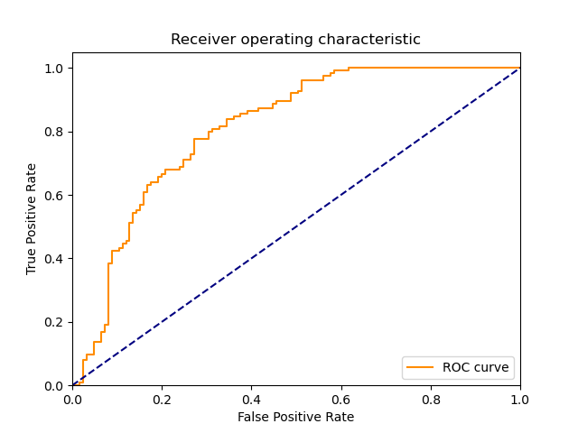
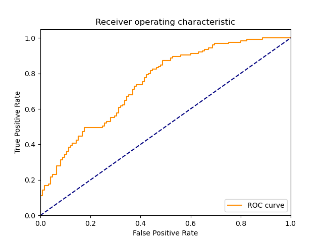

| 9 |
AdaBoostClassifier |
An AdaBoost classifier |
7.327696 |
0.296929 |
107 |
77 |
48 |
18 |
0.856 |
0.616 |
0.690323 |
0.736 |
0.264 |
0.764286 |
1.050763 |
0.104301 |
2.573969 |
|
|
|
| 6 |
NonLinearSVM |
Non Linear Support Vector Classification |
0.015623 |
0.015630 |
117 |
65 |
60 |
8 |
0.936 |
0.520 |
0.661017 |
0.728 |
0.272 |
0.774834 |
1.039566 |
49.596215 |
49.574275 |
 |
|
 |
| 7 |
LP |
Linear perceptron classifier |
0.000000 |
0.000000 |
100 |
82 |
43 |
25 |
0.800 |
0.656 |
0.699301 |
0.728 |
0.272 |
0.746269 |
1.029111 |
inf |
inf |
 |
|
|
| 5 |
LinearSVM |
Linear Support Vector Classification |
0.078120 |
0.000000 |
112 |
67 |
58 |
13 |
0.896 |
0.536 |
0.658824 |
0.716 |
0.284 |
0.759322 |
1.012456 |
9.719945 |
inf |
|
|
 |
| 10 |
GradientBoostingClassifier |
An GradientBoost classifier |
13.859409 |
0.015618 |
111 |
67 |
58 |
14 |
0.888 |
0.536 |
0.656805 |
0.712 |
0.288 |
0.755102 |
1.004054 |
0.054483 |
48.347925 |
|
|
|
| 8 |
MLP |
Multi-layer Perceptron classifier. |
0.843680 |
0.015671 |
90 |
84 |
41 |
35 |
0.720 |
0.672 |
0.687023 |
0.696 |
0.304 |
0.703125 |
0.958012 |
0.833402 |
44.867867 |
|
|
|
| 2 |
BernoulliNBC |
Naive Bayes classifier for multivariate Bernoulli models |
0.000000 |
0.000000 |
109 |
61 |
64 |
16 |
0.872 |
0.488 |
0.630058 |
0.680 |
0.320 |
0.731544 |
0.945278 |
inf |
inf |
 |
 |
 |
| 4 |
KNeighborsClassifier |
Classifier implementing the k-nearest neighbors vote |
0.000000 |
0.015623 |
111 |
57 |
68 |
14 |
0.888 |
0.456 |
0.620112 |
0.672 |
0.328 |
0.730263 |
0.933621 |
inf |
46.741835 |
|
 |
 |
| 1 |
RealBoost |
An RealBoost classifier |
27.921650 |
0.000000 |
101 |
60 |
65 |
24 |
0.808 |
0.480 |
0.608434 |
0.644 |
0.356 |
0.694158 |
0.882021 |
0.024861 |
inf |
 |
 |
 |
| 3 |
GaussianNBC |
Gaussian Naive Bayes (GaussianNB) |
0.015613 |
0.000000 |
108 |
30 |
95 |
17 |
0.864 |
0.240 |
0.532020 |
0.552 |
0.448 |
0.658537 |
0.771285 |
42.178521 |
inf |
 |
 |
 |
| 0 |
DiscreteNBC |
DiscreteNBC |
0.062415 |
0.031211 |
60 |
61 |
64 |
65 |
0.480 |
0.488 |
0.483871 |
0.484 |
0.516 |
0.481928 |
0.628349 |
7.721329 |
15.440771 |
 |
 |
|
{kind=link}
{kind=link}
{kind=link}
{kind=link}
{kind=link}
{kind=link}
{kind=link}
{kind=link}
{kind=link}
{kind=link}
{kind=link}
{kind=link}
{kind=link}
{kind=link}
{kind=link}
{kind=link}
{kind=link}
{kind=link}